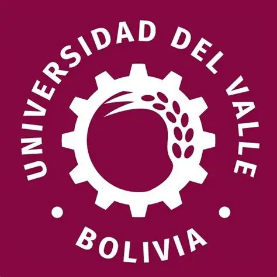

Mi recorrido académico y las áreas que forman parte de mi aprendizaje.

Estudios universitarios en curso.
Resumen de la formación declarada para este portafolio.
| INSTITUCIÓN | PROGRAMA | UBICACIÓN | ESTADO |
|---|---|---|---|
| Universidad Privada del Valle | Ingeniería en Sistemas | Santa Cruz, Bolivia | En curso |
Materias y áreas vinculadas a mi formación. La lista se puede ampliar a medida que avance en la carrera.